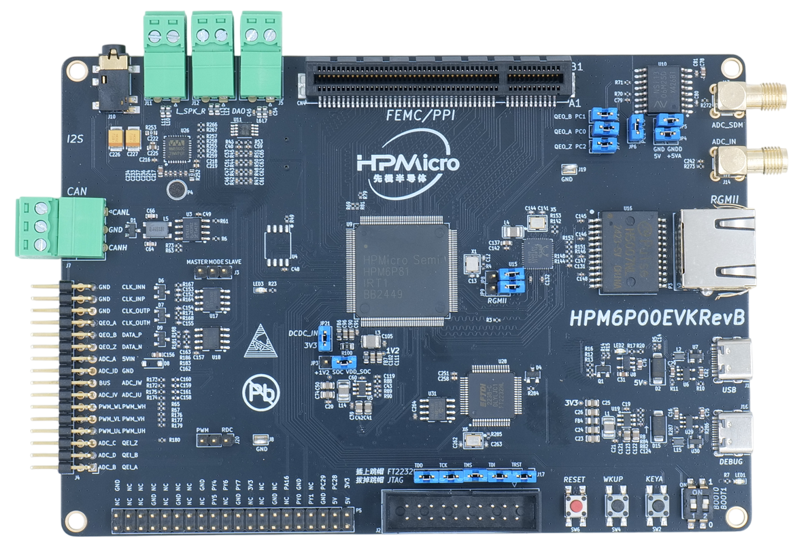
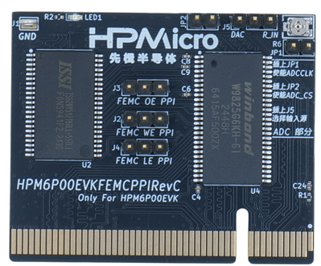

9. HPM6P00EVK
9.1. Overview
The HPM6P00 is a dual-core MCU running 600MHz with high computing power and abundant peripheral resources.
The HPM6P00EVK is an evaluation board for the HPM6P00 series MCU, providing a range of interfaces including ADC input with SMA interface, SDM input with SMA interface, motor control interface (QEO/QEI/SEI/PWM/ADC), CAN interface, LIN interface, Ethernet interface, USB interface, audio interface, PPI/FREMC interface, and Raspberry Pi interface. It also integrates an onboard debugger FT2232 for easy debugging by users.
9.2. Hardware
HPM6P00 MCU (600MHz dual-core, 1MB Flash and 800KB SRAM on chip)
Onboard Memory
16MB Quad SPI NOR Flash
Ethernet
1000 Mbits PHY
USB
USB type C (USB 2.0 OTG) connector x1
Audio
Line in
Mic
DAO
Motor
RS422
RS485
AD sensor
NSI1306W25
Others
LED
CAN
LIN
Note
When using FEMC(SDRAM) or PPI peripherals, please insert the corresponding expansion board into the PPI/FEMC interface
The standard expansion board for HPM6P00EVK evaluation purposes is as follows, with a 16 bits SDRAM (FEMC access), a 16 bits SRAM (FEMC or PPI access) and a parallel ADC (PPI access).

The FEMC/PPI interface has high flexibility. If you need to evaluate other parallel port devices, such as FPGA, ASYNC SRAM, etc., you can design your own expansion board or contact us.
9.3. DIP Switch
bit[2:1] |
Description |
|---|---|
OFF, OFF |
Boot from Quad SPI NOR flash |
OFF, ON |
Boot from eMMC |
ON, OFF |
ISP |
Note
On HPM6P00EVKRevB, when the ISP mode is selected and Segger or Ozone is used for online debugging, network initialization will fail due to the multiplexing of USB0_P and ENet RXCK signals and the differential output from the USB controller.
9.5. Plug-in
SEI CLK Section:
SEI CLK Section Function
Position
Note
SEI.CLK Section
J3
Master side, CLKO active. Slave side, CLKI active
PWM/RDC interface section
PWM/RDC interface section Function
Position
Note
PWM/RDC interface
J20
PWM side, the J4.PWM_UH pin is the PWM_UH function.
RDC side, the J4.PWM_UH pin is the RDC0 function
CAN/LIN interface section
CAN/LIN interface section Function
Position
Note
CAN/LIN interface
J6/J15/J18
CAN side, PD29/PD30/PD31 connect to CAN transceiver.
LIN side, PD29/PD30/PD31 connect to LIN transceiver
USB/RGMII interface section
USB/RGMII interface section Function
Position
Note
USB/RGMII interface
JP8/JP9
All disconnected: can use USB interface.
All connected: can use RGMII interface
SDM/QEO interface section
SDM/QEO interface section Function
Position
Note
SDM interface
JP1/JP2/JP7/JP4/JP5/JP6
Disconnect JP1/JP2/JP7
Connect JP4/JP5/JP6, R71(0Ω) needs to be connected on HPM6P00EVKRevB.
QEO interface
JP1/JP2/JP7/JP6
Connect JP1/JP2/JP7
Disconnect JP6, R71(0Ω) needs to be removed on HPM6P00EVKRevB.
Debug interface select
Debug interface select Function
Position
Note
Debug interface select
J17
All connected: use the on-board ft2232,
All disconnected: use JTAG interface
PPI/FEMC interface
PPI/FEMC interface Function
Position
Note
PPI/FEMC interface
CN1
Connecting to PPI or FEMC expansion board
PPI/FEMC expansion board interface select
PPI/FEMC expansion board interface Function
Position
Note
FEMC: SDRAM and SRAM can work simultaneously
J2、J3、J4、JP1、JP2
connect J2/J3/J4 to FEMC side, disconnect JP1/JP2
PPI: ADC and SRAM can work simultaneously
J2、J3、J4、JP1、JP2
connect J2/J3/J4 to PPI side, connect JP1/JP2
Other: ADC input select
J5
The ADC voltage can come from DAC or on-board adjustable resistor voltage division, selected by J5
9.6. Pin Description
PUART Pin: The PUART is used for low power mode testing, such as wakeup, etc.
PUART Pin Function
Pin
Position
PUART.TX
PY0
P5[8]
PUART.RX
PY1
P5[10]
UART0 Pin:
The UART0 use for core0 debugger console:
UART0 Pin Function
Pin
Position
UART0.TX
PA00
DEBUGUART0
UART0.RX
PA01
DEBUGUART0
UART4 Pin:
The UART4 is used for core1 debugger console or some functional testing using UART, such as MICROROS_UART, USB_CDC_ACM_UART, MODBUS_RTU, lin etc.
UART4 Pin Function
Pin
Position
Remark
UART4.TX
PY00
P5[8]
UART4.RX
PY01
P5[10]
UART4.break
PY05
P5[24]
Generate UART break signal
CAN Pin
CAN Pin Function
Position
CAN_H
J7[0]
CAN_L
J7[2]
Audio Pin
Audio Pin Function
Position
Speaker Left Channel
J11
Speaker Right Channel
J12
3.5mm
J10
DAO Interface
J5
ADC Pin
ADC Pin Function
Position
ADC Input
J4[2]
ACMP pin
ACMP pin Function
Position
CMP4.INN6
J4[2]
Quadrature Encoder Pin
Quadrature Encoder Pin Function
Position
QEI.A / HALL.U
J4[1]
QEI.B / HALL.V
J4[3]
QEI.Z / HALL.W
J4[5]
QEO.A
J4[26]
QEO.B
J4[24]
QEO.Z
J4[22]
HALL Pin
The HALL pin of the hpm6200evk needs to be connected.
Function |
EVK Position |
Motor Position |
|---|---|---|
HALL.U |
J4[1] |
J22[3] |
HALL.V |
J4[3] |
J22[4] |
HALL.W |
J4[5] |
J22[5] |
GND |
J4[32] |
J22[1] |
PWM Output Pin
PWM Output Pin Function
Position
PWM.WL / PWM1.P5
J4[12]
PWM.WH / PWM1.P4
J4[11]
PWM.VL / PWM1.P3
J4[10]
PWM.VH / PWM1.P2
J4[9]
PWM.UL / PWM1.P1
J4[8]
PWM.UH / PWM1.P0
J4[7]
PWM.FAULT
J4[22]
SEI Pin
SEI Pin Function
Position
Note
SEI.CLK_IN_P
J4[29]
Clock differential output in host mode P
SEI.CLK_IN_N
J4[31]
Clock differential output in host mode N
SEI.CLK_OUT_P
J4[27]
Clock differential input in slave mode P
SEI.CLK_OUT_N
J4[25]
Clock differential input in slave mode N
SEI.DATA_P
J4[23]
Data differential Signal P
SEI.DATA_N
J4[21]
Data differential Signal N
QEIV2 Sin/Cos Pin
QEIV2 Sin/Cos Pin Function
Position
Note
ADC2.INA09
J4[15]
ADC_IW (Cos)
ADC0.INA14
J4[13]
ADC_IU (Sin)
RDC pin
RDC pin Function
EVK board Position
RDC board Position
RDC.PWM
J4[7]
J2[7]
RDC.ADC0
J4[13]
J2[13]
RDC.ADC1
J4[14]
J2[14]
GND
J4[32]
J2[17]
PLB Pulse Output Pin
PLB Pulse Output Pin Function
Position
PLB.PULSE_OUT
J4[9]
PLB LIN Clock Pin
This pin is used for UART LIN Slave baudrate adaptive demo to detect the clock of RX signal
PLB LIN Clock Pin Function
Position
PLB.TRGM_IN
J20[3]
PLB Filter Output Pin
PLB Filter Output Pin Function
Position
PLB.Filter_IN
J4[9]
PLB.Filter_OUT
J4[11]
LOBS Pin
LOBS Pin Function
Pin
Position
Trig Pin0
PC28
P5[3]
Trig Pin1
PC29
P5[5]
GPTMR Pin
GPTMR Pin Function
Position
Remark
GPTMR4.CAPT_0
J4[3]
GPTMR4.COMP_0
J4[1]
BLCK of i2s emulation
GPTMR0.COMP_0
J4[26]
LRCK of i2s emulation
GPTMR5.COMP_2
J4[5]
MCLK of i2s emulation
CS Pin of i2s emulation todo
CS Pin of i2s emulation Pin
Position
Remark
PA11
P1[4]
The pin that controls the SPI slave CS
SPI Pin
SPI Pin Function
Pin
Position
SPI2.CSN
PY05
P5[24]
SPI2.SCLK
PY04
P5[23]
SPI2.MISO
PY06
P5[21]
SPI2.MOSI
PY07
P5[19]
I2C Pin
I2C Pin Function
Position
I2C1.SCL
P5[5]
I2C1.SDA
P5[3]
Ethernet PPS PPS Pin todo
Ethernet PPS PPS Pin Function
Pin
Position
ENET0.EVTO0
PE06
J4[24]
ENET0.EVTO1
PF20
J4[4]
ENET0.EVTI1
PE07
J4[26]